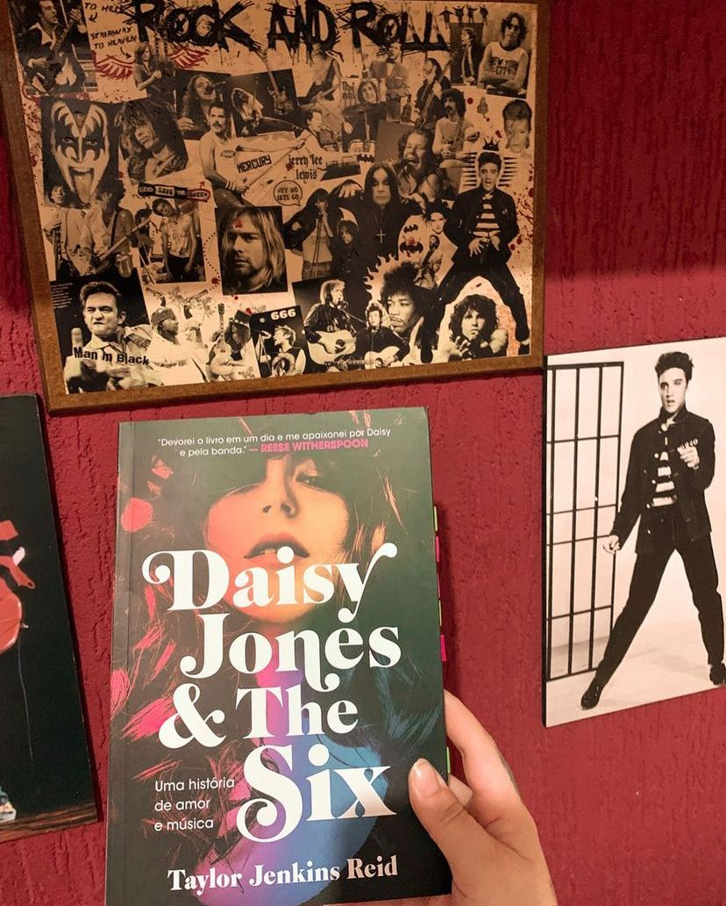

Daisy Jones and The Six
(Taylor Jenkins Reid - Paralela)
⭐⭐⭐⭐⭐
Todo mundo conhece Daisy Jones & The Six. Nos anos setenta, dominavam as paradas de sucesso, faziam shows para plateias lotadas e conquistavam milhões de fãs. Eram a voz de uma geração, e Daisy, a inspiração de toda garota descolada. Mas no dia 12 de julho de 1979, no último show da turnê Aurora, eles se separaram. E ninguém nunca soube por quê. Até agora.
Esta é história de uma menina de Los Angeles que sonhava em ser uma estrela do rock e de uma banda que também almejava seu lugar ao sol. E de tudo o que aconteceu ― o sexo, as drogas, os conflitos e os dramas ― quando um produtor apostou (certo!) que juntos poderiam se tornar lendas da música.
Antes de falar qualquer coisa sobre o livro em si, eu preciso destacar a capacidade da autora Taylor Jenkins Reid em criar personagens palpáveis com histórias que apesar de fictícias parecem reais e ela faz tudo com uma maestria e fluidez em suas obras que consegue tocar o leitor de uma forma impressionante.
O que mais me chocou no livro é que tudo parece real ! A narrativa é construída por meio de entrevistas com integrantes da bandas, e assim o mesmo acontecimento pode ter mais de um ponto de vista. Outras personalidades que acompanharam de perto o sucesso da banda também dão declarações como jornalistas, produtores e tudo isso vai completando a narrativa.
Ambientando na década de 70 vemos diversos temos virem a tona como: feminismo, maternidade, empoderamento feminino mas, tudo é explorado de uma forma tão certeira pela autora que não parece forçado, e sim questionamentos que começaram a serem levantados na época. Os conflitos são trabalhados de forma sútil e nós sofremos com as reviravoltas e ficamos boquiabertos com as revelações!
O livro tem muito da cena do rock e bate aquela vontade de ouvir Daisy Jones & The Six.
Posso dizer sem sombra de dúvidas que Taylor Jenkins Reid sabe o que faz e a cada livro mostra ao mundo seu talento!